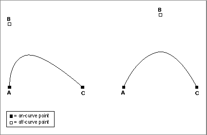
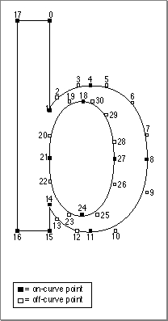
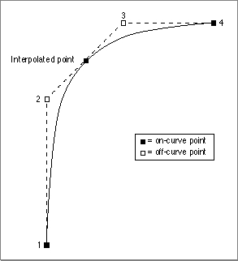
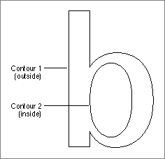
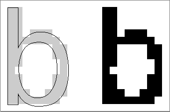
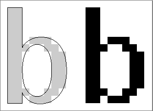

How the Font Manager Renders Outline Fonts
Outline fonts are stored in an outline font ('sfnt') resource as a collection of outline points. (Don't confuse these outline points with the points that determine point size, or thePointdata type, which specifies a location in the QuickDraw coordinate plane.) The Font Manager calculates lines and curves between the points, sets the bits that make the bitmap, and then sends the bitmap to QuickDraw for display.There are two types of outline points: on-curve points define the endpoints of lines, and off-curve points determine the curve of the line between the on-curve points. Two consecutive on-curve points define a straight line. To draw a curve, the Font Manager needs a third point that is off the curve and between the two on-curve points.
The Font Manager uses this parametric Bézier equation to draw the curves of the glyph from an outline font:
F(t) = (1 - t)2 * A + 2t(1 - t) * B + t2 * Cwheretranges between 0 and 1 as the curve moves from point A to point C. A and C are on-curve points; B is an off-curve point.Figure 4-8 shows two Bézier curves. The positions of on-curve points A and C remain constant, while off-curve point B shifts. The curve changes in relation to the position
of point B.Figure 4-8 The effect of an off-curve point on two Bézier curves

A font designer can use any number of outline points to create a glyph outline.
These points must be numbered in a logical order, because the Font Manager draws
lines and curves sequentially. This process produces a glyph such as the lowercase "b"
in Figure 4-9.Figure 4-9 An outline with points on and off the curve

There are several groups of points in Figure 4-9 that include two consecutive off-curve points. For instance, points 2 and 3 are both off-curve. In this case, the Font Manager interpolates an on-curve point midway between the two off-curve points, thereby defining two Bézier curves, as shown in Figure 4-10. Note that this additional on-curve point is used for creation of the glyph only; the Font Manager does not alter the outline font resource's list of points.Figure 4-10 A curve with consecutive off-curve points

When the Font Manager has finished drawing a closed loop, it has completed one contour of the outline. The font designer groups the points in the outline font resource into contours. In Figure 4-9, the Font Manager draws the first contour in the glyph from point 0 to point 17, and the second contour from point 18 to the end, creating the glyph in Figure 4-11.Figure 4-11 A glyph from an outline font

At this stage, the glyph does not have a fixed point size. Remember that point size is measured as the distance from the base line of one line of text to the base line of the next line of single-spaced text. Because the Font Manager has the measurements of the outline relative to the base line and ascent line, it can correlate the measurements with the requested point size and calculate how large the outline should be for that point size.The Font Manager uses the contours to determine the boundaries of the bitmap for this glyph when it is displayed. For example, the Macintosh computer's screen is a grid made of pixels. The Font Manager fits the glyph, scaled for the correct size, to this grid. If the center of one section of this grid--comparable to a pixel or a printer dot--falls on a contour or within two contours, the Font Manager sets this bit for the bitmap.
Because there are two contours for the glyph in Figure 4-11, the Font Manager begins with pixels at the boundary marked by contour 1 and stops when it gets to contour 2. Some glyphs need only one contour, such as the uppercase "I" in some fonts. Others have three or more contours, such as the - glyph from the ITC Zapf Dingbats font.
If the pixels (or dots) are tiny in proportion to the outline (when resolution is high or the point size of the glyph is large), they fill out the outline smoothly, and any pixels that jut out from the contours are not noticeable. If the display device has a low resolution or the point size is small, the pixels are large in relation to the outline. You can see in Figure 4-12 that the outline has produced an unattractive bitmap. There are gaps and blocky areas that would not be found in the high-resolution versions of the same glyph.
Figure 4-12 An unmodified glyph from an outline font at a small point size

Because the size of the pixels or dots used by the display device cannot change, the outline should adapt in order to produce a better bitmap. To achieve this end, font designers include instructions in the outline font resource that indicate how to change the shape of the outline under various conditions, such as low resolution or small point size. The lowercase "b" outline in Figure 4-13 is the same one depicted in Figure 4-12, except that the Font Manager has applied the instructions to the figure and produced a better bitmapped glyph. These instructions are equivalent to "move these points here" or "change the angle formed by these points." A font designer includes programs consisting of these instructions in certain outline font resource tables, where the Font Manager finds them and executes them under specified conditions. Most applications do not need to use instructions; however, if you want to know more about them, see the book TrueType Font Format Specification.Once the Font Manager has produced the outline according to the design and instructions, it creates a bitmap and sends the bitmap to QuickDraw, which draws it on the screen. The Font Manager then saves the bitmapped glyph in memory (caches it) and uses it the next time the user requests this glyph in this font at this point size.
Figure 4-13 An instructed glyph from an outline font
